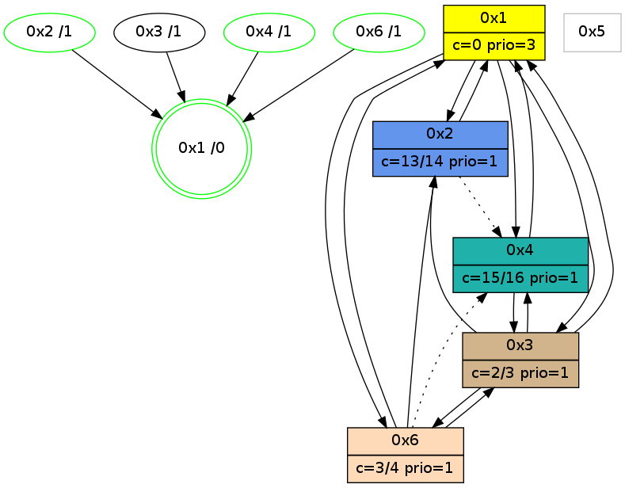

>> << IDX [start] -100 -25 -5 +0 +5 +25 +100 [1130.03005004]
 Previous packets
----------------------------------------------------------------------
1125.108968 beacon01(adaf) #0 coord=01,02,05,03,04,06 cycle=432.0ms assoc
-- color-indic=1 64 31 d8
1125.118930 beacon02(adaf) #0 coord=01,02,05,03,04,06 cycle=432.0ms assoc 64 60 27
1125.128929 beacon05(adaf) #0 coord=01,02,05,03,04,06 cycle=432.0ms assoc 64 c6 0d
1125.138929 beacon03(adaf) #0 coord=01,02,05,03,04,06 cycle=432.0ms assoc 64 5a 29
1125.148931 beacon04(adaf) #0 coord=01,02,05,03,04,06 cycle=432.0ms assoc 64 fc 03
1125.158931 beacon06(adaf) #0 coord=01,02,05,03,04,06 cycle=432.0ms assoc 64 88 1f
1125.173628 [Hello(1): seq=833 sym=2,4,6 sysInfo=hasWarning,coloring-mode-on,ColoringModeRequestCalled stat=2:1,2,12,0/4:6,9,14,3/6:2,0,2,0]
1125.175440 [Color(2) seq=317 @0:0 color=13/14 prio=1 c=0,2,3,7,c,e,f;1,4,6,8,9,b]
1125.176947 [Color(3) seq=227 @0:0 color=2/3 prio=1 c=0,3,d,f;7,c,e]
1125.183964 [Color(1) seq=359 @0:0 color=0 prio=3 c=c,d,f;2,3,7,e]
----------------------------------------------------------------------
1125.601076 beacon01(adaf) #0 coord=01,02,05,03,04,06 cycle=432.0ms assoc
-- color-indic=1 64 f5 b7
1125.611036 beacon02(adaf) #0 coord=01,02,05,03,04,06 cycle=432.0ms assoc 64 a4 48
1125.621036 beacon05(adaf) #0 coord=01,02,05,03,04,06 cycle=432.0ms assoc 64 02 62
1125.631037 beacon03(adaf) #0 coord=01,02,05,03,04,06 cycle=432.0ms assoc 64 9e 46
1125.641038 beacon04(adaf) #0 coord=01,02,05,03,04,06 cycle=432.0ms assoc 64 38 6c
1125.651038 beacon06(adaf) #0 coord=01,02,05,03,04,06 cycle=432.0ms assoc 64 4c 70
1125.667243 [Hello(4): seq=933 sym=1,3 sysInfo=hasWarning stat=1:0,2,2,0/3:3,5,5,4]
1125.670778 [Color(4) seq=214 @0:0 color=15/16 prio=1 c=0,3,7,c;1,2,4,6,8,9,b,d,e]
----------------------------------------------------------------------
1126.093184 beacon01(adaf) #0 coord=01,02,05,03,04,06 cycle=432.0ms assoc
-- color-indic=1 64 b8 b0
1126.103145 beacon02(adaf) #0 coord=01,02,05,03,04,06 cycle=432.0ms assoc 64 e9 4f
1126.113145 beacon05(adaf) #0 coord=01,02,05,03,04,06 cycle=432.0ms assoc 64 4f 65
1126.123146 beacon03(adaf) #0 coord=01,02,05,03,04,06 cycle=432.0ms assoc 64 d3 41
1126.133146 beacon04(adaf) #0 coord=01,02,05,03,04,06 cycle=432.0ms assoc 64 75 6b
1126.143146 beacon06(adaf) #0 coord=01,02,05,03,04,06 cycle=432.0ms assoc 64 01 77
1126.155514 [Color(6) seq=296 @0:0 color=3/4 prio=1 c=0,2,d;7,c,e,f]
1126.159416 [Color(3) seq=228 @0:0 color=2/3 prio=1 c=0,3,d,f;7,c,e]
1126.161396 [Color(2) seq=318 @0:0 color=13/14 prio=1 c=0,2,3,7,c,e,f;1,4,6,8,9,b]
1126.165290 [Hello(1): seq=834 sym=2,4,6 sysInfo=hasWarning,coloring-mode-on,ColoringModeRequestCalled stat=2:2,2,12,0/4:7,10,14,3/6:2,0,2,0]
1126.167986 [STC(1) #0.198 new-neigh,tree-change,inconsistent-stability,stable,to-color d=0]
1126.171517 [Color(1) seq=360 @0:0 color=0 prio=3 c=c,d,f;2,3,7,e]
----------------------------------------------------------------------
1126.585296 beacon01(adaf) #0 coord=01,02,05,03,04,06 cycle=432.0ms assoc
-- color-indic=1 64 7c df
1126.595257 beacon02(adaf) #0 coord=01,02,05,03,04,06 cycle=432.0ms assoc 64 2d 20
1126.605258 beacon05(adaf) #0 coord=01,02,05,03,04,06 cycle=432.0ms assoc 64 8b 0a
1126.615258 beacon03(adaf) #0 coord=01,02,05,03,04,06 cycle=432.0ms assoc 64 17 2e
1126.625258 beacon04(adaf) #0 coord=01,02,05,03,04,06 cycle=432.0ms assoc 64 b1 04
1126.635258 beacon06(adaf) #0 coord=01,02,05,03,04,06 cycle=432.0ms assoc 64 c5 18
1126.647030 [Hello(3): seq=932 sym=6,2,4 asym=1 sysInfo=hasWarning stat=6:6,14,10,5/2:1,4,1,0/4:3,4,0,0/1:14,7,15,1]
1126.649775 [Hello(4): seq=934 sym=1,3 sysInfo=hasWarning stat=1:1,3,3,0/3:3,6,5,4]
1126.652675 [STC(4)->1 #0.198 new-neigh,tree-change,inconsistent-stability,stable,to-color d=1]
1126.655924 [Color(4) seq=215 @0:0 color=15/16 prio=1 c=0,3,7,c;1,2,4,6,8,9,b,d,e]
----------------------------------------------------------------------
1127.077403 beacon01(adaf) #0 coord=01,02,05,03,04,06 cycle=432.0ms assoc
-- color-indic=1 64 30 6f
1127.087364 beacon02(adaf) #0 coord=01,02,05,03,04,06 cycle=432.0ms assoc 64 61 90
1127.097365 beacon05(adaf) #0 coord=01,02,05,03,04,06 cycle=432.0ms assoc 64 c7 ba
1127.107365 beacon03(adaf) #0 coord=01,02,05,03,04,06 cycle=432.0ms assoc 64 5b 9e
1127.117365 beacon04(adaf) #0 coord=01,02,05,03,04,06 cycle=432.0ms assoc 64 fd b4
1127.127365 beacon06(adaf) #0 coord=01,02,05,03,04,06 cycle=432.0ms assoc 64 89 a8
1127.138903 [STC(3)->6-.->1 #0.198 to-color d=2]
1127.140989 [Color(2) seq=319 @0:0 color=13/14 prio=1 c=0,2,3,7,c,e,f;1,4,6,8,9,b]
1127.143390 [Color(6) seq=297 @0:0 color=3/4 prio=1 c=0,2,d;7,c,e,f]
1127.147209 [Hello(1): seq=835 sym=2,4,6,3 sysInfo=hasWarning,coloring-mode-on,ColoringModeRequestCalled stat=2:2,2,13,0/4:8,10,14,3/6:2,0,2,0/3:0,0,0,0]
1127.151317 [Color(1) seq=361 @0:0 color=0 prio=3 c=c,d,f;2,3,7,e]
----------------------------------------------------------------------
1127.569511 beacon01(adaf) #0 coord=01,02,05,03,04,06 cycle=432.0ms assoc
-- color-indic=1 64 f4 00
1127.579472 beacon02(adaf) #0 coord=01,02,05,03,04,06 cycle=432.0ms assoc 64 a5 ff
1127.589472 beacon05(adaf) #0 coord=01,02,05,03,04,06 cycle=432.0ms assoc 64 03 d5
1127.599473 beacon03(adaf) #0 coord=01,02,05,03,04,06 cycle=432.0ms assoc 64 9f f1
1127.609473 beacon04(adaf) #0 coord=01,02,05,03,04,06 cycle=432.0ms assoc 64 39 db
1127.619475 beacon06(adaf) #0 coord=01,02,05,03,04,06 cycle=432.0ms assoc 64 4d c7
1127.631159 [Hello(3): seq=933 sym=6,2,1,4 sysInfo=hasWarning stat=6:7,15,11,5/2:1,5,1,0/1:15,8,15,1/4:4,4,0,0]
1127.634922 [Hello(2): seq=1421 sym=6,1 asym=3,4 sysInfo=hasWarning stat=6:0,3,0,0/1:7,1,0,0/3:13,9,12,3/4:9,0,3,1]
1127.637432 [Hello(4): seq=935 sym=1,3 sysInfo=hasWarning stat=1:2,4,3,0/3:4,6,6,4]
1127.640331 [Color(4) seq=216 @0:0 color=15/16 prio=1 c=0,3,7,c;1,2,4,6,8,9,b,d,e]
----------------------------------------------------------------------
1128.061618 beacon01(adaf) #0 coord=01,02,05,03,04,06 cycle=432.0ms assoc
-- color-indic=1 64 8c ad
1128.071580 beacon02(adaf) #0 coord=01,02,05,03,04,06 cycle=432.0ms assoc 64 dd 52
1128.081579 beacon05(adaf) #0 coord=01,02,05,03,04,06 cycle=432.0ms assoc 64 7b 78
1128.091579 beacon03(adaf) #0 coord=01,02,05,03,04,06 cycle=432.0ms assoc 64 e7 5c
1128.101580 beacon04(adaf) #0 coord=01,02,05,03,04,06 cycle=432.0ms assoc 64 41 76
1128.111580 beacon06(adaf) #0 coord=01,02,05,03,04,06 cycle=432.0ms assoc 64 35 6a
1128.123922 [Color(6) seq=298 @0:0 color=3/4 prio=1 c=0,2,d;7,c,e,f]
1128.125527 PARSE ERROR************************
Traceback (most recent call last):
File "PacketAnalysis.py", line 167, in showOperaPacket
structPacket = OperaPacketParse.parsePacket(rawPacket)
File "../../pkg-python/HipSens/Core/OperaPacketParse.py", line 461, in parsePacket
return parseHelloMessage(data)
File "../../pkg-python/HipSens/Core/OperaPacketParse.py", line 109, in parseHelloMessage
sysInfo,stability,colorInfo = struct.unpack("!HBB", linkList[0:4])
error: unpack requires a string argument of length 4
48 20 01 00 03 44 00 02 02 08 02 00 04 00 06 00 03 00 53 04 00 86 00 00 4c 08 0d 22 3e b9 02 02 01 01 53 e8
1128.128094 [Color(2) seq=320 @0:0 color=13/14 prio=1 c=0,2,3,7,c,e,f;1,4,6,8,9,b]
1128.131037 [Color(1) seq=362 @0:0 color=0 prio=3 c=c,d,f;2,3,7,e]
----------------------------------------------------------------------
1128.553726 beacon01(adaf) #0 coord=01,02,05,03,04,06 cycle=432.0ms assoc
-- color-indic=1 64 48 c2
1128.563688 beacon02(adaf) #0 coord=01,02,05,03,04,06 cycle=432.0ms assoc 64 19 3d
1128.573688 beacon05(adaf) #0 coord=01,02,05,03,04,06 cycle=432.0ms assoc 64 bf 17
1128.583686 beacon03(adaf) #0 coord=01,02,05,03,04,06 cycle=432.0ms assoc 64 23 33
1128.593688 beacon04(adaf) #0 coord=01,02,05,03,04,06 cycle=432.0ms assoc 64 85 19
1128.603689 beacon06(adaf) #0 coord=01,02,05,03,04,06 cycle=432.0ms assoc 64 f1 05
1128.615388 [Hello(3): seq=934 sym=6,2,1,4 sysInfo=hasWarning stat=6:8,15,11,5/2:1,6,1,0/1:0,9,15,1/4:5,5,0,0]
1128.619148 [Hello(2): seq=1422 sym=1 asym=3,4 sysInfo=hasWarning stat=1:7,2,0,0/3:13,9,12,3/4:10,1,3,1]
1128.621287 [STC(1) #0.199 new-neigh,tree-change,inconsistent-stability,stable,to-color d=0]
1128.625290 [Hello(4): seq=936 sym=1,3 sysInfo=hasWarning stat=1:3,5,3,0/3:4,6,6,4]
1128.627859 [Color(4) seq=217 @0:0 color=15/16 prio=1 c=0,3,7,c;1,2,4,6,8,9,b,d,e]
----------------------------------------------------------------------
1129.045834 beacon01(adaf) #0 coord=01,02,05,03,04,06 cycle=432.0ms assoc
-- color-indic=1 64 04 72
1129.055794 beacon02(adaf) #0 coord=01,02,05,03,04,06 cycle=432.0ms assoc 64 55 8d
1129.065794 beacon05(adaf) #0 coord=01,02,05,03,04,06 cycle=432.0ms assoc 64 f3 a7
1129.075796 beacon03(adaf) #0 coord=01,02,05,03,04,06 cycle=432.0ms assoc 64 6f 83
1129.085796 beacon04(adaf) #0 coord=01,02,05,03,04,06 cycle=432.0ms assoc 64 c9 a9
1129.095795 beacon06(adaf) #0 coord=01,02,05,03,04,06 cycle=432.0ms assoc 64 bd b5
1129.107344 [STC(3)->1 #0.199 to-color d=1]
1129.109442 [STC(2)->1 #0.199 new-neigh,tree-change,inconsistent-stability,stable,to-color d=1]
1129.111038 [Hello(1): seq=837 sym=2,4,6,3 sysInfo=hasWarning,coloring-mode-on,ColoringModeRequestCalled stat=2:2,2,13,0/4:10,12,14,3/6:2,0,2,0/3:1,0,1,0]
1129.113782 [Color(2) seq=321 @0:0 color=13/14 prio=1 c=0,2,3,7,c,e,f;1,4,6,8,9,b]
1129.117175 [Color(1) seq=363 @0:0 color=0 prio=3 c=c,d,f;2,3,7,e]
----------------------------------------------------------------------
1129.537941 beacon01(adaf) #0 coord=01,02,05,03,04,06 cycle=432.0ms assoc
-- color-indic=1 64 c0 1d
1129.547902 beacon02(adaf) #0 coord=01,02,05,03,04,06 cycle=432.0ms assoc 64 91 e2
1129.557902 beacon05(adaf) #0 coord=01,02,05,03,04,06 cycle=432.0ms assoc 64 37 c8
1129.567902 beacon03(adaf) #0 coord=01,02,05,03,04,06 cycle=432.0ms assoc 64 ab ec
1129.577903 beacon04(adaf) #0 coord=01,02,05,03,04,06 cycle=432.0ms assoc 64 0d c6
1129.587903 beacon06(adaf) #0 coord=01,02,05,03,04,06 cycle=432.0ms assoc 64 79 da
1129.599654 [Hello(2): seq=1423 sym=1 asym=4 sysInfo=hasWarning stat=1:7,3,1,0/4:11,2,3,1]
1129.603335 [Hello(6): seq=850 sym=2,1,3 asym=4 sysInfo=hasWarning stat=2:2,7,1,0/1:15,10,12,0/3:0,3,1,0/4:11,1,2,1]
1129.605844 [Hello(4): seq=937 sym=1,3 sysInfo=hasWarning stat=1:4,6,3,0/3:4,6,7,4]
1129.608713 [Color(4) seq=218 @0:0 color=15/16 prio=1 c=0,3,7,c;1,2,4,6,8,9,b,d,e]